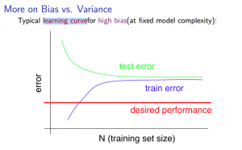

Machine Learning Week 6
Advice for Applying Machine Learning
Deciding What to Try Next
Errors in your predictions can be troubleshooted by:
- Getting more training examples
- Trying smaller sets of features
- Trying additional features
- Trying polynomial features
- Increasing or decreasing $\lambda$
It's not proper to pick one of these avenues at random. Following we'll
explore techiniques for choosing one of the above solutions.
Evaluating a Hypothesis
A hypothesis may have low error for the training examples but still be
inaccurate(because of overfitting).
With a given dataset of training examples, we can split up the data into
two sets: a training set and a test set.
The new procedure using these two sets is then:
-
Learn $\theta$ and minimize $J_{train}(\theta)$ using the training set
- Compute the test set error $J_{test}(\theta)$
TEST SET ERROR:
-
For linear regression: $J_{test}(\theta) =
\frac{1}{2m_{test}}\sum_{i=1}^{m_{test}}(h_\theta(x_{test}^{(i)}-y_{test}^{(i)})^2$
-
For classification~Misclassification error(aka 0/1 misclassification
error): $err(h_\theta(x), y)$ equals 1 if $h_\theta(x) \ge 0.5 \ and \
y=0$ or $h_\theta(x) < 0.5 \ and \ y=1$, This gives us a binary 0 or
1 error result based on a misclassification. Then The average test error
for the test set is
$\frac{1}{m_{test}}\sum_{i=1}^{m_{test}}err(h_\theta(x_{test}^{(i)},y_{test}^{(i)})$,
which gives us the proportion of the test data that was misclassified.
Model Selection and Train/Validation/Test Sets
-
Just because a learning algorithm fits a training set well, that does
not mean it is a good hypothesis.
-
The error of your hypothesis as measured on the data set with which you
trained the parameters will be lower than any other data set.
In order to choose the model of your hypothesis, you can test each degree
of polynomial and look at the error result.
Without the Validation Set (note: this is a bad method - do not use
it):
-
Optimize the parameters in Θ using the training set for each
polynomial degree.
-
Find the polynomial degree d with the least error using the test set.
-
Estimate the generalization error also using the test set with
$J_{test}(\Theta^{(d)})$, (d = theta from polynomial with lower
error);
In this case, we have trained one variable, d, or the degree of the
polynomial, using the test set. This will cause our error value to be
greater for any other set of data.
Use of the CV set
To solve this, we can introduce a third set, the
Cross Validation Set, to serve as an intermediate set
that we can train d with. Then our test set will give us an accurate,
non-optimistic error.
One example way to break down our dataset into the three sets is:
- Training set: 60%
- Cross validation set: 20%
-
Test set: 20%We can now calculate three separate error values for the
three different sets.
With the Validation Set (note: this method presumes we do not also use
the CV set for regularization):
-
Optimize the parameters in Θ using the training set for each polynomial
degree.
-
Find the polynomial degree d with the least error using the cross
validation set.
-
Estimate the generalization error using the test set with
$J_{test}(\Theta^{(d)})$, (d = theta from polynomial with lower error);
This way, the degree of the polynomial d has not been trained using the
test set.
(Mentor note: be aware that using the CV set to select 'd' means that we
cannot also use it for the validation curve process of setting the lambda
value).
Diagnosing Bias vs. Variance
In this section we examine the relationship between the degree of the
polynomial d and the underfitting or overfitting of our hypothesis.
-
We need to distinguish whether bias or variance is the problem
contributing to bad predictions.
-
High bias is underfitting and high variance is overfitting. We need to
find a golden mean between these two.
The training error will tend to decrease as we increase the degree d of
the polynomial.
At the same time, the cross validation error will tend to decrease as we
increase d up to a point, and then it will increase as d is increased,
forming a convex curve.
High bias (underfitting): both $J_{train}(\theta)$ and
$J_{CV}(\theta)$ will be high. Also, $J_{CV}(\theta) \approx
J_{train}(\theta)$.
High variance (overfitting): $J_{train}(\theta)$ will be
low and $J_{CV}(\theta)$ will be much greater than $J_{train}(\theta)$.
That two sides are represented in the figure below:

Regularization and Bias/Variance
Instead of looking at the degree d contributing to bias/variance, now we
will look at the regularization parameter λ.
- Large λ: High bias (underfitting)
- Intermediate λ: just right
- Small λ: High variance (overfitting)
A large lambda heavily penalizes all the Θ parameters, which greatly
simplifies the line of our resulting function, so causes underfitting.
The relationship of λ to the training set and the variance set is as
follows:
-
Low λ: $J_{train}(\theta)$ is low and $J_{CV}(\theta)$
is high, which cause high variance(overfitting).
-
Intermediate λ: $J_{train}(\theta)$ and
$J_{CV}(\theta)$ are somewhat low and $J_{train}(\theta) \approx
J_{CV}(\theta)$.
-
Large λ: both $J_{train}(\theta)$ and $J_{CV}(\theta)$
will be high, which cause high bias(underfitting).
The figure below illustrates the relationship between lambda and the
hypothesis:

In order to choose the model and the regularization λ, we need:
-
Create a list of lambdas (i.e.
λ∈{0,0.01,0.02,0.04,0.08,0.16,0.32,0.64,1.28,2.56,5.12,10.24});
-
Create a set of models with different degrees or any other variants.
-
Iterate through the λs and for each λ go through all the models to learn
some Θ.
-
Compute the cross validation error using the learned Θ (computed with λ)
on the $J_{CV}(\Theta)$ without regularization or λ = 0.
-
Select the best combo that produces the lowest error on the cross
validation set.
-
Using the best combo Θ and λ, apply it on $J_{test}(\Theta)$ to see if
it has a good generalization of the problem.
Learning Curves
Training 3 examples will easily have 0 errors because we can always find a
quadratic curve that exactly touches 3 points.
-
As the training set gets larger, the error for a quadratic function
increases.
-
The error value will plateau out after a certain m, or traing set size.
With high bias:
Low training set size: causes $J_{train}(\Theta)$ to be
low and $J_{CV}(\Theta)$ to be high.
Large training set size: causes both $J_{train}(\Theta)$
and $J_{CV}(\Theta)$ to be high with $J_{train}(\Theta) \approx
J_{CV}(\Theta)$.
If a learning algorithm is suffering from high bias,
getting more training data
will not (by itself) help much.
For high variance, we have the following relationships in terms of the
training set size:
With high variance:
Low training set size: $J_{train}(\Theta)$ will be low
and $J_{CV}(\Theta)$ will be high.
Large training set size: $J_{train}(\Theta)$ increases
with training set size and $J_{CV}(\Theta)$ continues to decrease without
leveling off. Also, $J_{train}(\Theta) < J_{CV}(\Theta)$ but the
difference between them remains significant.
If a learning algorithm is suffering from high variance,
getting more training data is likely to help.


Deciding What to Do Next Revisited
Our decision process can be broken down as follows:
- Getting more training examples : Fixes high variance
- Trying smaller sets of features: Fixes high variance
- Adding features: Fixes high bias
- Adding polynomial features: Fixes high bias
- Decreasing $\lambda$: Fixes high bias
- Increasing $\lambda$: Fixes high variance
Diagnosing Neural Networks
-
A neural network with fewer parameters is
prone to underfitting, it is also
computationally cheaper.
-
A large neural network with more parameters is
prone to overfitting, it is also
computationally expensive. In this case you can use
regularization (increase $\lambda$) to address the overfitting.
Using a single hidden layer is a good starting default. You can train your
neural network on a number of hidden layers using your cross validation
set.
Model Selection
Choosing M the order of polynomials.
How can we tell which parameters Θ to leave in the model (known as
"model selection")?
There are several ways to solve this problem:
- Get more data (very difficult).
-
Choose the model which best fits the data without overfitting (very
difficult).
- Reduce the opportunity for overfitting through regularization.
Bias: approximation error (Difference between expected value and
optimal value):
- High Bias = UnderFitting(BU)
-
$J_{train}(\theta)$ and $J_{CV}(\theta)$ both will be high and
$J_{train}(\theta) \approx J_{CV}(\theta)$
Variance: estimation error due to finite data:
- High Variance = OverFitting (VO)
-
$J_{train}(\theta)$ is low and $J_{CV}(\theta) >>
J_{train}(\theta)$
Intuition for the bias-variance trade-off:
-
Complex model => sensitive to data => much affected by changes in
X => high variance, low bias.
-
Simple model => more rigid => does not change as much with changes
in X => low variance, high bias.
One of the most important goals in learning: finding a model that is just
right in the bias-variance trade-off.
Regularization Effects:
Model Complexity Effects:
-
Lower-order polynomials (low model complexity) have high bias and low
variance. In this case, the model fits poorly consistently.
-
Higher-order polynomials (high model complexity) fit the training data
extremely well and the test data extremely poorly. These have low bias
on the training data, but very high variance.
-
In reality, we would want to choose a model somewhere in between, that
can generalize well but also fits the data reasonably well.
A typical rule of thumb when running diagnostics is:
- More training examples fixes high variance but not high bias.
- Fewer features fixes high variance but not high bias.
- Additional features fixes high bias but not high variance.
-
The addition of polynomial and interaction features fixes high bias but
not high variance.
-
When using gradient descent, decreasing lambda can fix high bias and
increasing lambda can fix high variance (lambda is the regularization
parameter).
-
When using neural networks, small neural networks are more prone to
under-fitting and big neural networks are prone to over-fitting.
Cross-validation of network size is a way to choose alternatives.